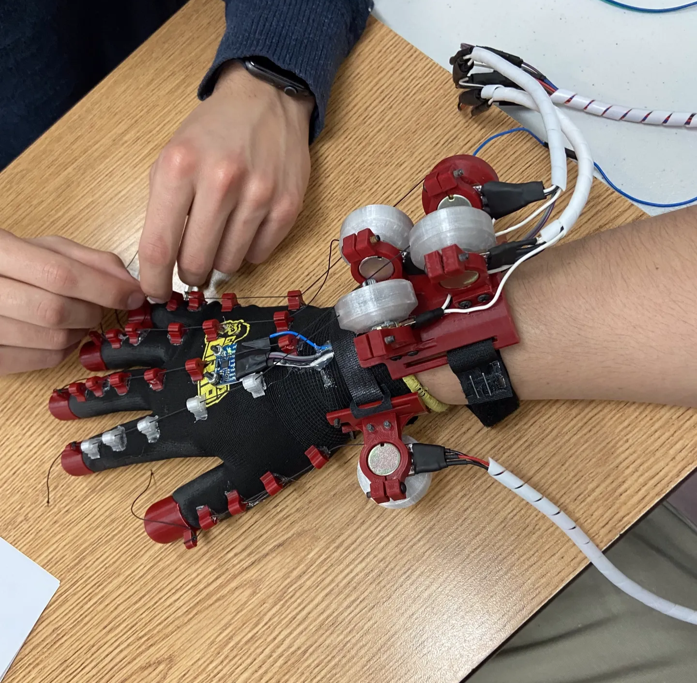
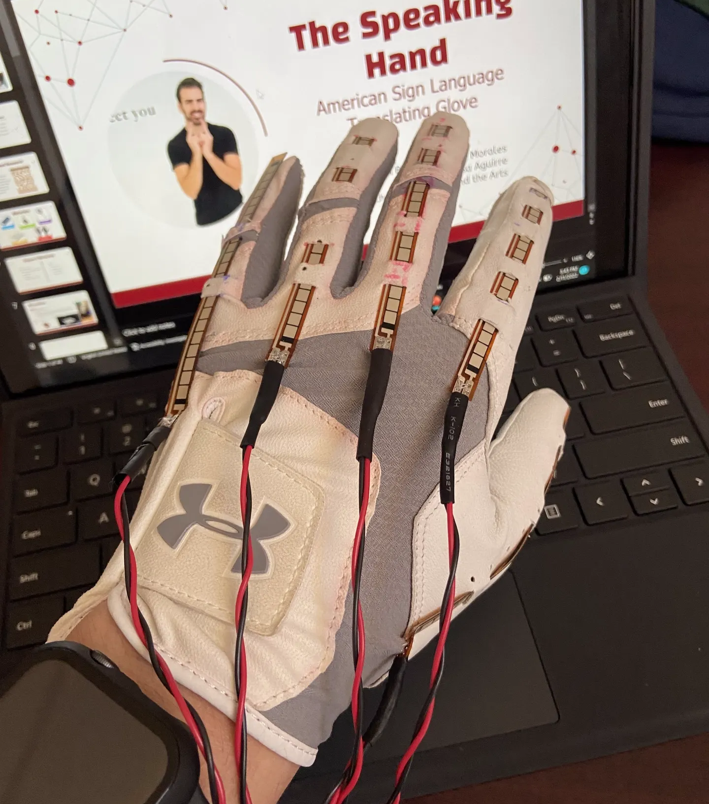

Project Overview
Developed a wearable device that interprets ASL gestures and translates them into readable text,
assisting hearing-impaired individuals in daily communication.
Ultimately competed in the Texas Science and Engineering Fair (TXSEF).
Initial Iteration
The first iteration consisted of a glove equipped with sensors to collect hand gesture data — finger placement and palm orientation.
- Potentiometers with string-pulley mechanisms determined finger position
- An accelerometer/gyroscope detected hand movement and orientation


Final Iteration
Due to the mechanical complexity of the first design, we switched to flex sensors — more robust and accurate for this application. The gyroscope/accelerometer was retained for hand movement data.